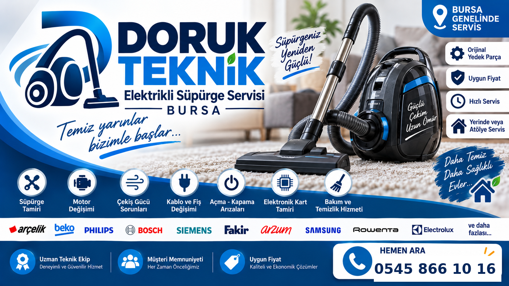

Önce arızanın kaynağını belirlemeye odaklanırız.

DORUK TEKNİK • BURSA
Bursa Elektrikli Süpürge Servisi
Elektrikli süpürgeniz çalışmıyor, çekiş gücü azaldı veya motorundan ses mi geliyor? Doruk Teknik olarak klasik elektrikli süpürgeler için arıza tespiti, bakım ve onarım desteği sunuyoruz.
● Bursa genelinde elektrikli süpürge servis desteği☎ Bilgi ve servis talebi: 0545 866 10 16
BursaHİZMET BÖLGESİ
Çok MarkaMARKA DESTEĞİ
TelefonlaHIZLI İLETİŞİM
İşlem ve servis hakkında önceden bilgi alabilirsiniz.
Marka ve modele göre onarım seçenekleri değerlendirilir.
Servis bilgisi için doğrudan telefonla ulaşabilirsiniz.
Uzman DestekTEKNİK KONTROL
Uygun ÇözümİHTİYACA GÖRE ONARIM
BursaYEREL SERVİS ODAĞI
Hizmetlerimiz
Elektrikli süpürgenizde karşılaştığınız sorunlar için servis ve onarım desteği.
❄
Süpürge Makinesi Tamiri
Çalışmayan veya düzensiz çalışan klasik elektrikli süpürgeler için arıza tespiti ve onarım.
Detaylı Bilgi⚙
Süpürge Motoru
Motoru ses yapan, ısınan veya performansı düşen cihazlarda motor kontrolü.
Detaylı Bilgi〰
Çekiş Gücü Sorunları
Çekişi azalan süpürgelerde filtre, hava kanalı ve motor kontrolleri.
Detaylı Bilgi🔌
Kablo ve Fiş Değişimi
Kablo sarma mekanizması, fiş ve elektrik bağlantılarındaki sorunların kontrolü.
Detaylı Bilgi⏻
Açma-Kapama Arızaları
Açma-kapama düğmesi ve ilgili elektrik bağlantılarında arıza kontrolü.
Detaylı Bilgi▦
Elektronik Kart Tamiri
Uygun modellerde elektronik kart ve kontrol devresi arızalarının incelenmesi.
Detaylı BilgiNeden Doruk Teknik?
Servis sürecinde anlaşılır bilgilendirme ve cihaza uygun çözüm yaklaşımı.
🛠
Teknik Kontrol
Arızanın kaynağını anlamak için cihazın ilgili parçaları kontrol edilir.
🛡
İşlem Öncesi Bilgi
Onarım seçeneği ve süreç hakkında bilgi almak için bize ulaşabilirsiniz.
◷
Kolay İletişim
Servis ve cihazınızla ilgili sorularınız için telefonla görüşebilirsiniz.
HAKKIMIZDA
Bursa Süpürge Servisi – Doruk Teknik
Doruk Teknik, Bursa'da klasik elektrikli süpürge servisi ve süpürge makinesi tamiri alanına odaklanır. Çalışmama, çekiş gücü kaybı, motor sesi, kablo ve açma-kapama sorunları gibi arızalarda cihazın durumuna uygun servis desteği için bizimle iletişime geçebilirsiniz.
Servis öncesinde cihazınızın markasını, modelini ve yaşadığınız sorunu paylaşarak bilgi alabilirsiniz.
✓ Elektrikli süpürge servisi
✓ Motor ve çekiş sorunları
✓ Kablo, fiş ve düğme arızaları
✓ Uygun modellerde kart kontrolü
✓ Bursa servis odağı
Servis Verilen Markalar
Marka ve modelinize göre servis imkânı hakkında bilgi alın.
ArçelikBekoPhilipsBoschSiemensFakirArzumSamsungRowentaElectrolux
Müşteri Memnuniyeti
Servis sürecinde doğru bilgilendirme ve ihtiyaca uygun çözüm önceliğimizdir.
★★★★★
Deneyiminizi paylaşın
Doruk Teknik'ten hizmet aldıysanız görüşlerinizi bizimle paylaşabilirsiniz. Gerçek müşteri değerlendirmeleri, hizmet kalitemizi geliştirmemize yardımcı olur.
Sık Sorulan Sorular
Elektrikli süpürge servisi hakkında merak edilenler.
Bursa'nın hangi bölgelerine hizmet veriyorsunuz?
Doruk Teknik Bursa genelinde elektrikli süpürge servisi için iletişim almaktadır. Bulunduğunuz ilçeyi arayarak teyit edebilirsiniz.
Hangi marka elektrikli süpürgelere bakıyorsunuz?
Arçelik, Beko, Philips, Bosch, Siemens, Fakir, Arzum, Samsung, Rowenta ve Electrolux başta olmak üzere marka ve modelinizi telefonla bildirerek servis uygunluğunu öğrenebilirsiniz.
Süpürgem çekiş gücünü kaybetti, ne yapmalıyım?
Filtre, hava kanalı veya motor kaynaklı sorunlar olabilir. Cihazın marka ve modelini belirterek servis desteği için arayabilirsiniz.
Robot süpürge tamiri yapılıyor mu?
Bu site klasik elektrikli süpürge servis hizmetleri içindir. Robot süpürge tamiri hizmeti sunulmamaktadır.
Servis ve onarım ücreti ne kadar?
Ücret, cihazın marka-modeline ve arızasına göre değişebilir. Güncel bilgi için 0545 866 10 16 numarasından iletişime geçebilirsiniz.
Süpürgeniz arızalandı mı?
Elektrikli süpürge servisi ve süpürge makinesi tamiri hakkında bilgi almak için Doruk Teknik'i arayın.